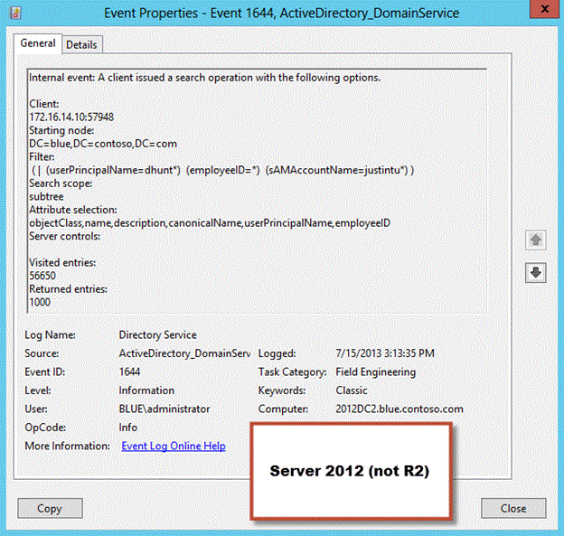

Wazuh SIEM Dashboard
Wazuh
Wazuh is an open-source SIEM platform that enables defenders to implement logging and detection infrastructure at no cost. The project is an incredible accomplishment and is continuously being updated with new features, bug fixes, and extensions to the base ruleset.
As with most SIEM solutions, Wazuh relies on worker agents to aggregate logs from endpoints and deliver them to the management server for alerting. By default, Wazuh agents subscribe to a handful of Windows event log channels - Security, System, Application, and some other operational ones. These channels provide a large amount of events useful for tracking system configuration changes, user authentications, and the general activity of the enterprise.
Sysmon
However, Wazuh lacks deeper endpoint protections if you use it off the shelf. Inside of Wazuh’s base ruleset is support for Sysmon - a Sysinternals utility that allows for fine-grained logging of system events like process creation, network activity, and driver loads. As a defender, these are absolutely vital events that need to be integrated into the SIEM to effectively detect attacker behavior. The modern threat landscape simply requires visibility into endpoint processes to quarantine malware early.
Sysmon works by parsing a configuration file that specifies which events to listen for. This is an important detail, as Sysmon can become very noisy very quickly. Take for example Sysmon events 12, 13, and 14 that monitor registry change events. A normal, relatively idle Windows install will have thousands of registry events a second if not more. A configuration file that is scoped too wide can overwhelm the processing and storage capabilities of the endpoint or SIEM server. Luckily, smart people have established a good baseline configuration that limits noise while capturing the more interesting events. I chose to start with SwiftOnSecurity’s baseline configuration due to its relative popularity.
After parsing the configuration file, Sysmon will load a kernel driver to setup callbacks on the events you have specified. When a subscribed event occurs, it will be recorded and shipped to the event log channel under Sysmon. Note that Sysmon
events are not under Security, System, Application, or other standard channels - as such, it will not be received by the Wazuh agent under a default configuration. To ingest the new Sysmon event channel with a Wazuh agent, either configure
the agent’s ossec.conf file locally on a specific endpoint or use the Management > Groups tab to make batch changes remotely. All that needs to be added are a few lines:
<localfile>
<location>Microsoft-Windows-Sysmon/Operational</location>
<log_format>eventchannel</log_format>
</localfile>
Sysmon Rules and Alerts
The hard part is over. With Sysmon events flowing in from the reconfigured agent, you should see plenty of alerts from the Sysmon event log channel. Wazuh’s base Sysmon ruleset is not bad but can be a bit noisy, especially in its determination
of “suspicious CMD shell launched”. If you want to write your own rules, Wazuh actually provides named groups for each Sysmon event ID. For example, if you wanted to write an alert for all High-integrity (Administrative) CMD or PowerShell sessions,
you can simply use the Event ID 1 - Process Creation sysmon group:
<rule id="250002" level="10">
<if_group>sysmon_event1</if_group>
<field name="win.eventdata.image">\\powershell.exe$|\\pwsh.exe$|\\cmd.exe$</field>
<field name="win.eventdata.integrityLevel">High</field>
<description>Administrative Command/PowerShell Session</description>
</rule>
I have created a handful of useful rules to detect common LOLBIN abuse and lateral movement techniques, such as WinRM process spawning and certutil.exe abuse:
<rule id="255006" level="10">
<if_group>sysmon_event1</if_group>
<field name="win.eventdata.image">wsmprovhost.exe</field>
<description>WinRM Invoked by $(win.eventdata.user)</description>
</rule>
<rule id="255007" level="8">
<if_group>sysmon_event1</if_group>
<field name="win.eventdata.parentImage">wsmprovhost.exe</field>
<description>Process Launched via WinRM</description>
</rule>
<rule id="250019" level="10">
<if_sid>250018</if_sid>
<field name="win.eventdata.commandline">URL|decode|decodehex|urlcache|ping</field>
<description>Suspicious certutil.exe Execution</description>
</rule>
I hope you recognize the incredible power of Sysmon’s logs and write some interesting rules too!
Logging LDAP
Of course, any red teamer will tell you that Sysmon is not necessarily a big deal. A more limited configuration file will limit noise, but it will also let attacker potentially slip by unnoticed. Furthermore, Sysmon cannot necessarily detect
more advanced malware techniques such as remote threadless injection or techniques that do not rely on CreateRemoteThread without a fairly loose configuration. The point is - we can’t just rely on endpoint behavior for threat detections. We
have to look at the network level.
This turned my attention to LDAP, as it is an absolutely vital source of abuse in attacks for enumeration and escalation attempts. My goal was to identify LDAP queries that I deemed “suspicious” - things like listing all SPNs for Kerberoasting, finding Constrained Delegation principals, etc. After doing some research, it turns out that Domain Controllers do not log incoming LDAP queries or binds at all by default, and it requires manual registry changes. You can still implement the changes via GPO, but its annoying regardless:
HKLM:\SYSTEM\CurrentControlSet\Services\NTDS\Diagnostics -> 15 Field Engineering SET TO 5
HKLM:\SYSTEM\CurrentControlSet\Services\NTDS\Parameters -> Expensive Search Results Threshold SET TO 1
HKLM:\SYSTEM\CurrentControlSet\Services\NTDS\Parameters -> Inefficient Search Results Threshold SET TO 1
HKLM:\SYSTEM\CurrentControlSet\Services\NTDS\Parameters -> Search Time Threshold (msecs) SET TO 1
Enabling these registry changes will allow for the logging of Event ID 1644 under the Directory Service event channel. Event 1644 isn’t really supposed to be used just for logging queries - it is meant to log queries that are overly expensive and may be slowing down AD processing times. However, we can force the event to trigger for ALL LDAP queries by lowering the thresholds of each metric to the minimum (1). After changing the registry values, you should start to see 1644s flow in.

LDAP and Wazuh
As before, Wazuh does not ingest the Directory Service event channel by default. We can again either edit the ossec.conf file or use Groups to add the lines:
<localfile>
<location>Directory Service</location>
<log_format>eventchannel</log_format>
</localfile>
However, this time around you won’t see anything in Wazuh after adding those lines. We have to manually add our own Directory Service parent channel rule to capture 1644s and sort them further:
<rule id="60235" level="0">
<if_sid>60009</if_sid>
<field name="win.system.channel">Directory Service</field>
<description>Directory Service Log Event</description>
<options>no_full_log</options>
</rule>
Note that the rule ID 60009 may change in future Wazuh versions - it is the rule for INFORMATIONAL severity events that aren’t already a member of a default event channel (Security, Application, etc). It is important to note that the current
version of Wazuh has a log testing bug for new Windows event channels. If you attempt to test a Directory Service log in the web interface or with wazuh-logtest, it will NOT WORK unless you make changes to the parent Windows rule!
From the parent rule, we can sort for the event ID 1644. You will undoubtedly find that the DC is reporting a huge amount of LDAP queries made from itself (on the loopback interface). We can sort these out to find only remote LDAP queries:
<rule id="60236" level="3">
<if_sid>60235</if_sid>
<field name="win.system.eventID">1644</field>
<field name="win.eventdata.data" negate="yes">[::1]</field>
<description>Remote LDAP query processed</description>
<options>no_full_log</options>
</rule>
From here I decided to make a decision to focus on LDAP queries made by valid user accounts. While I myself have certainly used computer and service accounts to make LDAP queries before, my goal was to detect initial enumeration attempts commonly made from compromised user sessions - typically through a phishing payload:
<rule id="60237" level="8">
<if_sid>60236</if_sid>
<field name="win.eventdata.data" negate="yes">MSOL_\.+$|\$$|UNAVAILABLE$</field>
<description>Remote LDAP query made by user account</description>
<options>no_full_log</options>
</rule>
Finally, I simply added a regex filter to include any queries I thought were “suspicious”. I referenced the Sigma project’s LDAP query page as well to expand the filter:
<rule id="60238" level="10">
<if_sid>60237</if_sid>
<regex>\(userAccountControl:1\.2\.840\.113556\.1\.4\.803:=4194304\)|\(userAccountControl:1\.2\.840\.113556\.1\.4\.803:=2097152\)|!\(userAccountControl:1\.2\.840\.113556\.1\.4\.803:=1048574\)|\(userAccountControl:1\.2\.840\.113556\.1\.4\.803:=524288\)|\(userAccountControl:1\.2\.840\.113556\.1\.4\.803:=65536\)|\(userAccountControl:1\.2\.840\.113556\.1\.4\.803:=8192\)|\(userAccountControl:1\.2\.840\.113556\.1\.4\.803:=544\)|!\(UserAccountControl:1\.2\.840\.113556\.1\.4\.803:=2\)|msDS-AllowedToActOnBehalfOfOtherIdentity|msDS-AllowedToDelegateTo|msDS-GroupManagedServiceAccount|\(accountExpires=9223372036854775807\)|\(accountExpires=0\)|\(adminCount=1\)|ms-MCS-AdmPwd</regex>
<description>Suspicious remote LDAP query made by user account</description>
<options>no_full_log</options>
</rule>
After implementing the rules and running BloodHound, I instantly got caught!